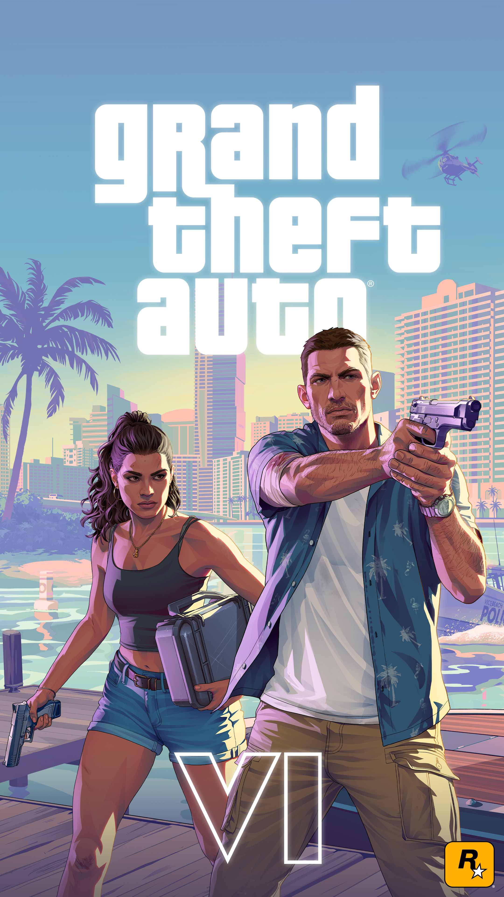
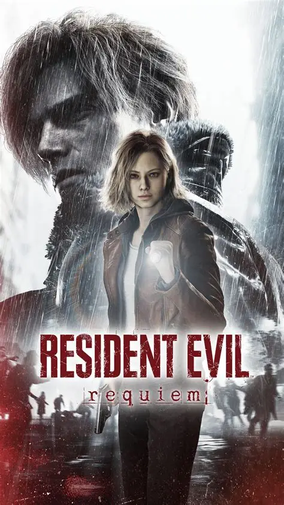
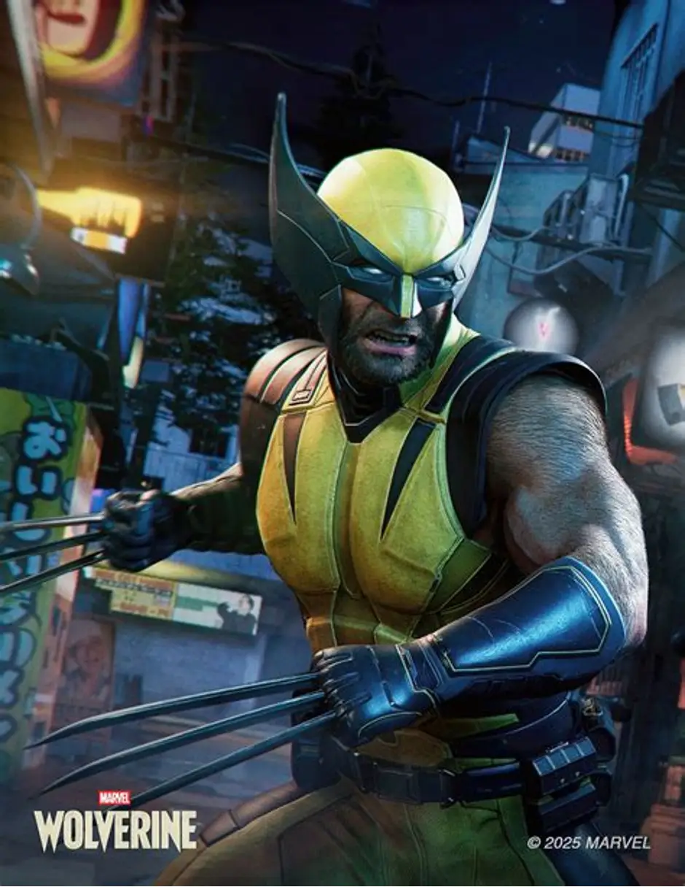
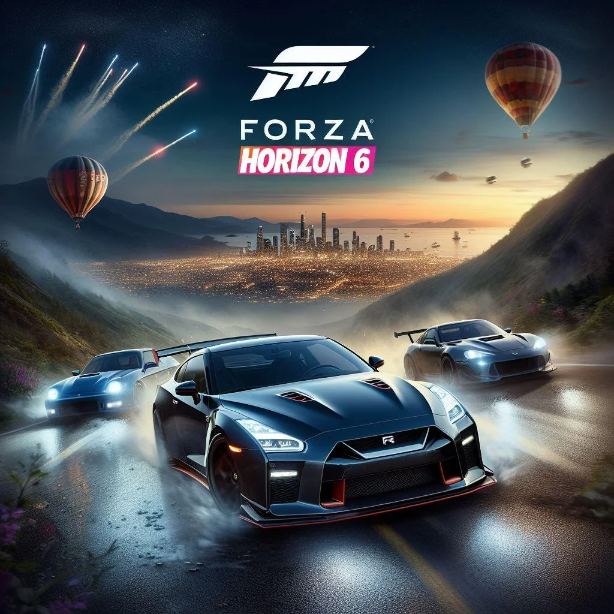

GTA VI
Sortie prévue le 19 novembre 2026.
Explorez Vice City et l'État de Leonida dans le nouvel opus de Rockstar Games.

Sortie prévue le 19 novembre 2026.
Explorez Vice City et l'État de Leonida dans le nouvel opus de Rockstar Games.

Sorti le 27 février 2026.
Un nouveau chapitre de la célèbre série de survival horror de Capcom.

Sortie en 2026.
Incarnez Wolverine dans une nouvelle aventure développée par Insomniac Games.

Sorti en 2026.
Découvrez de nouvelles courses et explorez le Japon au volant de voitures.